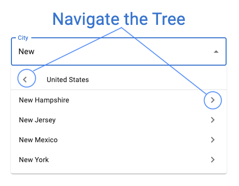
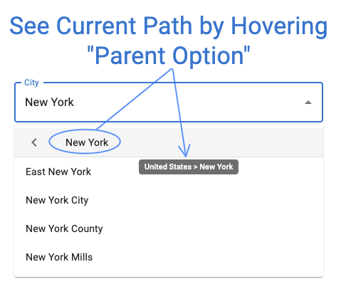
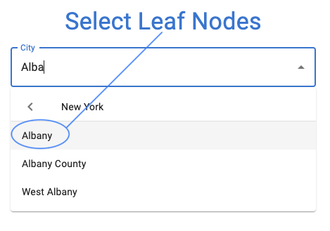
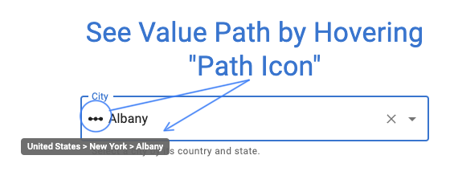

A select component for tree data structures that provides a compact user interface for navigating a tree.
   
Check out a live example here.
Given the following tree node interface.
class Node {
constructor(value, parent = null, children = null) {
this.value = value;
this.parent = parent;
this.children = children;
}
}
getChildren should return nullish values when it is called with a leaf node.const rootNodes = [...] // Array of Nodes;
const getChildren = (node) => node === null ? rootNodes : node.children;
const getParent = (node) => node.parent;
renderInput from Autocomplete props.const renderInput = (params) => <TextField {...params} />;
return <TreeSelect
getChildren={getChildren}
getParent={getParent}
renderInput={renderInput}
/>;
This package wraps the material-ui Autocomplete. Many of props from this component are passed from TreeSelect.
freeSolo values are wrapped in the class FreeSoloNode to provided a reference to the parent node under which the free solo value was created.
FreeSoloNode extends the native String object. This disallows "es5" as a target based on the way the typescript transpiler converts class semantics to function.
Generated using TypeDoc